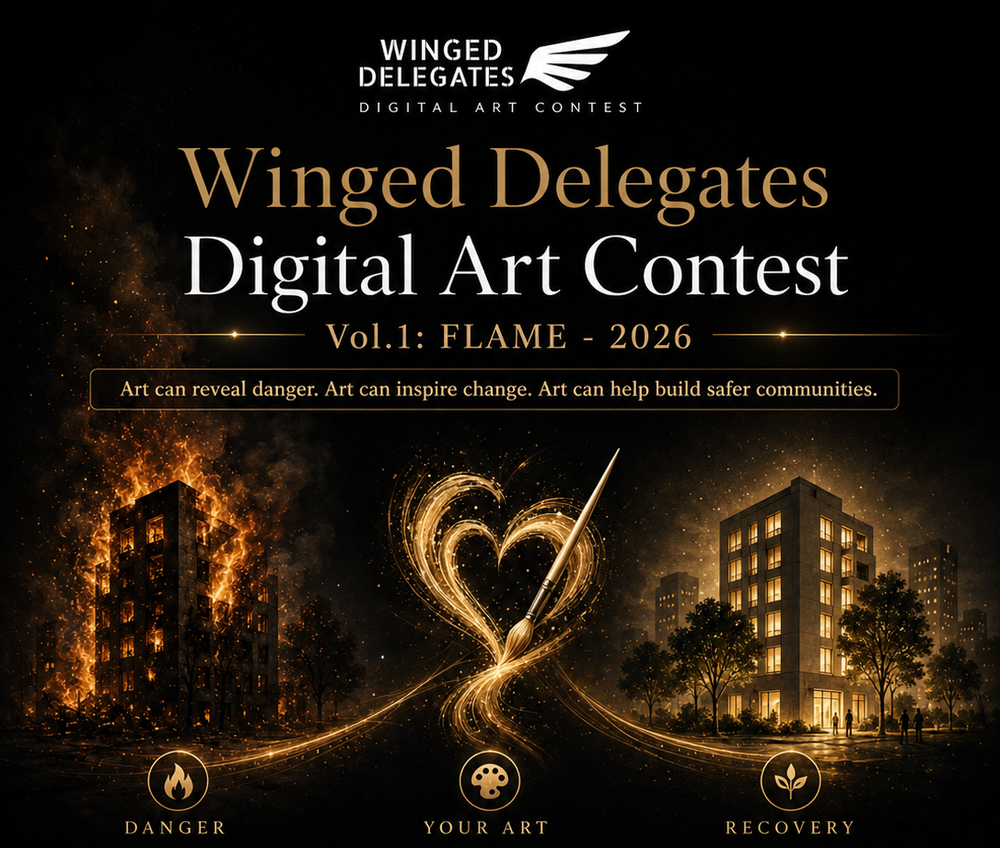

Art can reveal danger. Art can inspire change. Art can help build safer communities.

Born from a devastating 2025 fire in San Francisco’s Tenderloin, FLAME - 2026 invites artists around the world to create digital artworks that transform tragedy into awareness. The fire began with a faulty scooter or e-bike battery explosion in a multi-unit residential building, destroying one unit completely. With more than 100 similar battery-related fires reported in San Francisco neighborhoods, the issue is no longer isolated, it is part of everyday life. The first volume of the Winged Delegates Digital Art Contest responds to fire, risk, and safety in dense urban communities. We are calling for works that speak to the everyday dangers many neighborhoods face, from unsafe charging and battery-related fires to housing vulnerability, displacement, and the urgent need for community care. This is not only a fire safety theme. It is a call to notice what is often ignored, to warn without fear, and to imagine safer ways of living together. Selected works may be displayed on our street-facing screen in the Tenderloin, reaching residents, workers, visitors, and passersby in real life, beyond the walls of a gallery. We welcome digital artworks that carry a clear message, respond to the theme, and have the power to resonate with people passing by. Your work can become a message with wings.
Deadline: September 15th, 2026
Art Format: We welcome diverse artwork formats in any medium that can inspire people and promote fire safety awareness: Still Image (digital painting, illustration, photography, AI-assisted) and Moving Image (video art, animation, motion graphics - up to 3 min). All works must be digitally created or digitally manipulated.
How We Select Every submission is reviewed by a jury of local artists, educators, and community figures. We are looking for work that carries a clear message, responds to the theme, and has the power to reach people beyond the walls of a gallery.
Recognition: Recognition is offered across three tiers:
On the Window: Works that meet our guidelines and communicate their message clearly may be displayed on the Tenderloin window. Our goal is to bring as many voices to the street as possible.
Shortlisted Works: The jury then selects a shortlist of works that speak most strongly to the theme. Shortlisted artists receive a formal letter of recognition, shared with both the artist and their institution.
Winning Work: From the shortlist, one work is selected as the Winning Work. The artist receives a monetary award and a formal letter of recognition. Using AI-analyzed foot traffic data, the work is scheduled to appear when the street is most alive. A message with wings, delivered when people are most likely to receive it.
Golden Gate Avenue (December 2025): Over 100 firefighters responded to this early morning blaze at a six-story, rent-controlled apartment building adjacent to the historic Golden Gate Theater. The fire allegedly originated from an electric scooter battery explosion on the sixth floor. It left 45 to 70 residents displaced. Read more at Mission Local and SFist.
San Carlos Street (November 2025): This fire caused catastrophic damage to a multi-unit building at San Carlos Street. The fire ignited on the second floor and tore through the roof within minutes. Firefighters managed to rescue a resident's cat and retrieve vital personal items, but the extensive structural fire damage, a hole burned through the roof, and severe smoke saturation led restoration crews to initially estimate the building as a total property loss, forcing the displacement of its long-term tenants. Read more at Mission Local.
Wiese Alley (March 2024): This fire broke out around 2:00 a.m. in Wiese Street, a narrow alleyway between 15th and 16th streets. It originated externally, engulfing several parked cars before climbing the facade of a three-story wood-frame apartment building. Thick smoke blanketed the block, and intense heat heavily damaged two adjacent apartment properties. The fire results in displacement of at least 10 residents, many of whom struggled to find affordable long-term options in the aftermath. Read more at Mission Local.
Hayes Street (January 2023): Originating just before 2:00 a.m. at a residential structure on Hayes Street, the fire quickly escalated and leaped to two neighboring residential buildings. One firefighter was injured while containing the spread in the dense neighborhood layout. The fire heavily charred the top floors of the structures, resulting in 25 residents and three pets being displaced into emergency housing. Read more at Firefighter Close Calls.